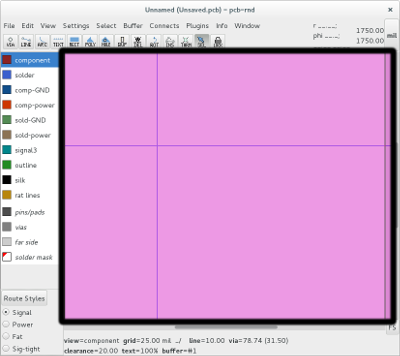
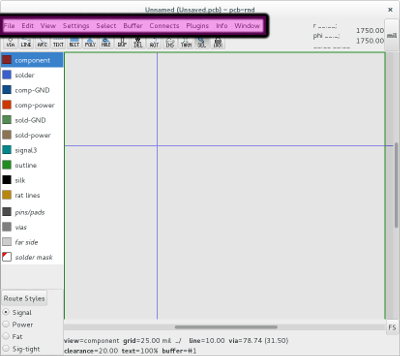
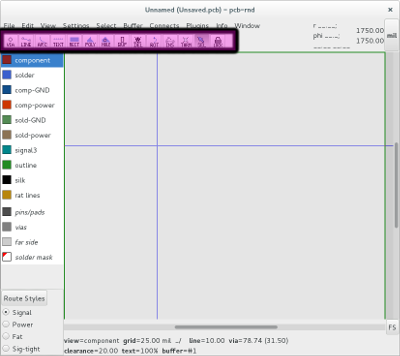
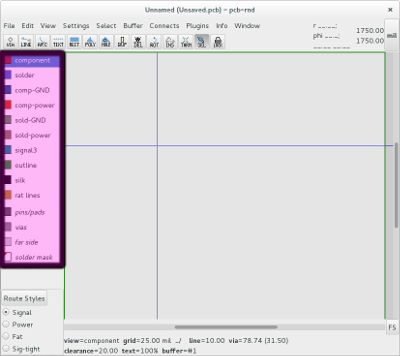
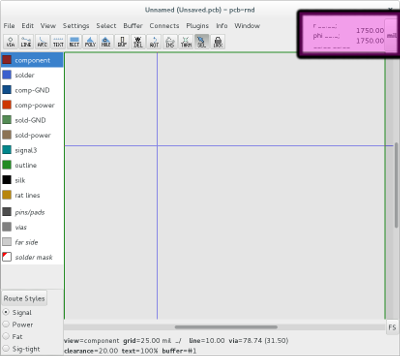
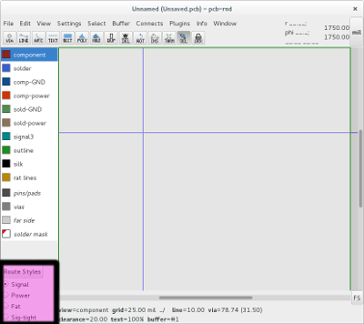
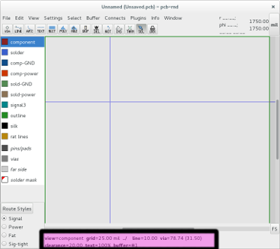

pcb-rnd - user manual
5.1 GTK+
pcb-rnd comes with a default graphical hid using GTK+
5.1.1 Using GTK+

The main window in pcb-rnd is a drawing area for your layout.

Menus perform standard file operations commands as well as pcb-rnd layout specific operations
menus:
- File - Standard file operations -pcb-rnd import/export, and access to the pcb-rnd preferences
- Edit - Undos, buffer ops, selection, edit name and route styles
- View - Main view grid control and attribute visibility
- Settings - Direct control of main window settings that mostly affect drawing
- Select - Selection and edit selection control
- Buffer - edit, select, place, transform buffer contents
- Connects - connection operations and DRC
- Plugins - Manage plugins
- Info - Generate reports and get keybindings
- Window - open a auxiliary window (dialog)

Add to and edit your layout

Change layer visibility

Readouts give live info for the user:
Obtain absolute and relative coordinate information

Access route style dialog and alter existing route style

Readouts provide live info for the user
Obtain view grid line drawing style reporter, via size, clearance value, text
size, buffer number
pcb-rnd key command standard...
Quick Keys
Enter the command line interface by typing :